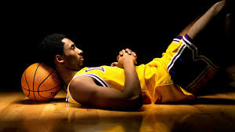

Hi, lest talk about basketball, but first a little introduction to basketball and its history.

Basketball is a team sport in which two teams, most commonly of five players each, opposing one another on a rectangular court, compete with the primary objective of shooting a basketball (approximately 9.4 inches (24 cm) in diameter) through the defender's hoop (a basket 18 inches (46 cm) in diameter mounted 10 feet (3.048 m) high to a backboard at each end of the court), while preventing the opposing team from shooting through their own hoop.
A field goal is worth two points, unless made from behind the three-point line, when it is worth three. After a foul, timed play stops and the player fouled or designated to shoot a technical foul is given one, two or three one-point free throws. The team with the most points at the end of the game wins, but if regulation play expires with the score tied, an additional period of play (overtime) is mandated.
In December 1891, James Naismith, a Canadian professor of physical education and instructor at the International Young Men's Christian Association Training School (now Springfield College) in Springfield, Massachusetts, was trying to keep his gym class active on a rainy day. He sought a vigorous indoor game to keep his students occupied and at proper levels of fitness during the long New England winters. After rejecting other ideas as either too rough or poorly suited to walled-in gymnasiums, he invented a new game in which players would pass a ball to teammates and try to score points by tossing the ball into a basket mounted on a wall. Naismith wrote the basic rules and nailed a peach basket onto an elevated track. Naismith initially set up the peach basket with its bottom intact, which meant that the ball had to be retrieved manually after each "basket" or point scored. This quickly proved tedious, so Naismith removed the bottom of the basket to allow the balls to be poked out with a long dowel after each scored basket
Hey! checkout the NBA page to know more about the best league in the world.
NBA pageNow, I'm going to show some of the best plays of the NBA league.